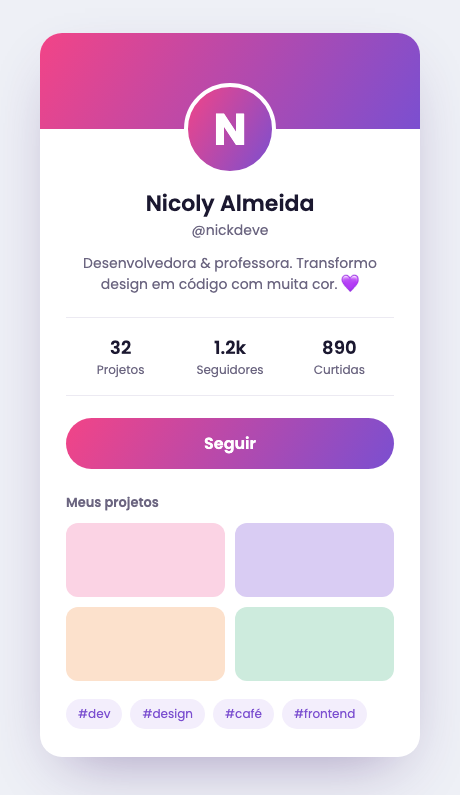
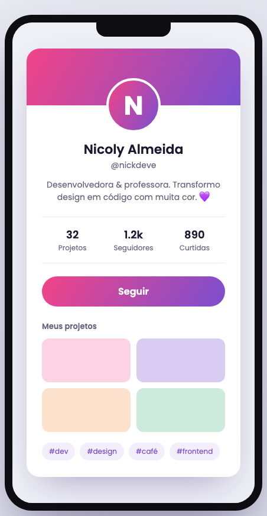
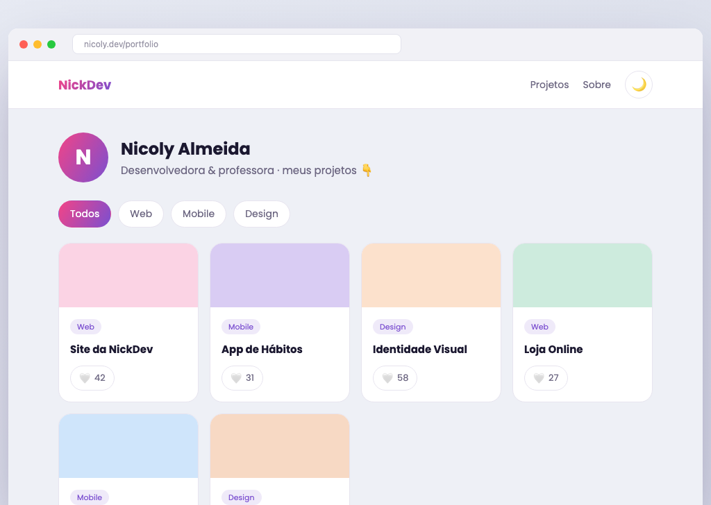
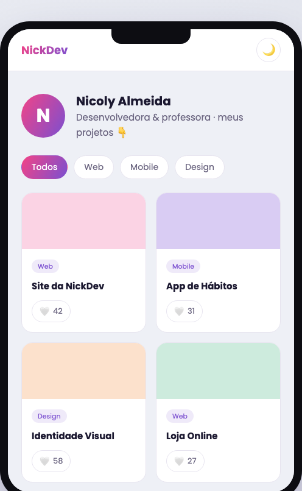

Um portfólio que reage 🎨⚡
Sua missão dupla: (1) reproduzir o design do portfólio abaixo com HTML e CSS, fiel ao layout, e (2) dar vida a ele com componentes que interagem — filtros, curtidas, tema e cards gerados por código. É o dia em que design, CSS e JavaScript se juntam. 🚀
O objetivo
Reproduzir o design usando a biblioteca Bootstrap (layout e componentes prontos) + um CSS de marca, e criar os cards com uma função a partir de uma lista de dados — reaproveitar um componente sem copiar e colar.
Antes do portfólio, reproduza este card de perfil. É o mesmo processo (ler o design → tokens → Flexbox/Grid), num tamanho pequeno pra pegar o jeito.


- Banner, avatar, stats (grid 3), botão, galeria (grid 2) e tags
- Centralizado no web (
max-width) e preenchendo no celular - Botão Seguir que vira Seguindo ✓ (um clique com JS)


Leia o design e ache o que se repete
Liste os blocos: navbar, perfil, filtros, grid de cards. Os cards são todos iguais na estrutura, só mudam os dados — isso é um componente.
Dica: onde há repetição, há componente. Não escreva 6 cards na mão!
Inclua o Bootstrap
O Bootstrap é uma biblioteca de CSS pronta: navbar, grid, cards e botões já vêm
estilizados. Em vez de escrever tudo, você usa as classes dele. Adicione no <head>:
<link rel="stylesheet" href="https://cdn.jsdelivr.net/npm/bootstrap@5.3.3/dist/css/bootstrap.min.css">
Combo: deixe um CSS de marca pequeno por cima (só o gradiente e as cores da NickDev).
Monte o layout com classes do Bootstrap
Navbar, container e grid responsivo saem prontos — sem escrever Flexbox/Grid na mão:
<!-- navbar pronta --> <nav class="navbar navbar-expand bg-body border-bottom sticky-top">...</nav> <!-- grid: 2 colunas no celular, 6 em telas grandes --> <div id="grid" class="row row-cols-2 row-cols-md-4 row-cols-xl-6 g-3"></div>
row-cols-* = quantas colunas por tamanho de tela. O Bootstrap já é responsivo!
O componente: 1 função → N cards ⭐
O coração da aula continua igual — mas a função devolve um card do Bootstrap:
function criarCard(projeto) { const col = document.createElement("div"); col.className = "col"; col.innerHTML = ` <div class="card h-100 border-0 shadow-sm"> <div class="cover" style="background:${projeto.cor}"></div> <div class="card-body"> <span class="badge rounded-pill tag-badge">${projeto.categoria}</span> <h3 class="card-title h6 mt-2">${projeto.titulo}</h3> </div> </div>`; return col; } projetos.forEach(p => grid.appendChild(criarCard(p)));
Sacada: o Bootstrap dá a aparência (card, badge, btn); a função dá o reúso. Componente = função que devolve HTML — a ponte pro React.
Interações (JS da aula 2)
Curtir (no card), filtrar, e o tema escuro nativo do Bootstrap 5.3:
// tema: o Bootstrap já tem dark mode nativo! tema.addEventListener("click", () => { const h = document.documentElement; const novo = h.getAttribute("data-bs-theme") === "dark" ? "light" : "dark"; h.setAttribute("data-bs-theme", novo); });
De graça: só trocar data-bs-theme e o site inteiro vira escuro/claro.
Publicar
Já é responsivo (o Bootstrap cuida). Publique na Vercel e manda o link no grupo! 🌍
- Bootstrap incluído (via CDN) no
<head> - Layout fiel: navbar, perfil, filtros e grid de cards com classes do Bootstrap
- Grid responsivo com
row-cols-* - Os cards gerados por uma função a partir de uma lista de dados
- Botão curtir com contador em cada card
- Botão de tema claro/escuro (com
data-bs-theme) - Um CSS de marca por cima (gradiente/cores da NickDev)
- Publicado na Vercel com link funcionando
- Filtros por categoria (Todos/Web/Mobile/Design) com estado ativo
- Botão “Carregar mais” que adiciona projetos da lista
- Evitar que o card mude de tamanho ao curtir (reserve o espaço)
- Salvar o tema com
localStorage(pesquise! 🔎) - Um efeito de
:hoverelevando o card
Revise Grid, tokens e componentização no guia. Trave? Espie o código do desafio — mas tente antes. 💜